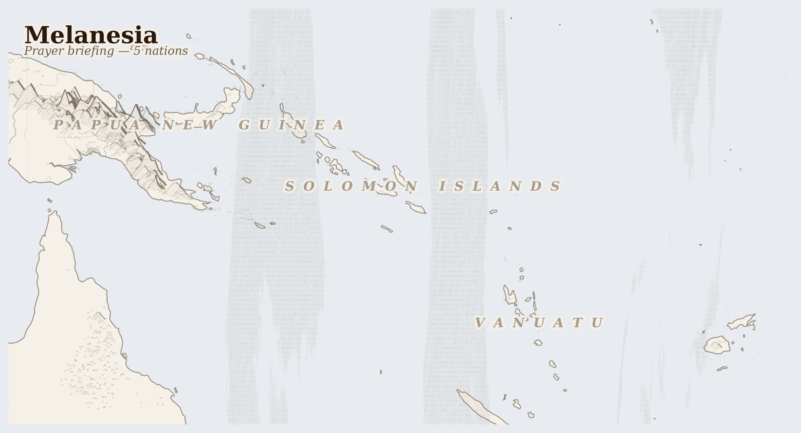

Melanesia13M people
where ENSO swings drought and cyclone across volcanic andosol that has sustained highland farming for nine thousand years
Lives Lived Here
Before dawn in the Western Highlands of PNG, a woman from the Enga community opens the gate to her garden — on land her clan has farmed for generations — and begins clearing a new section for sweet potato. The soil is volcanic and deep. The garden requires no fertiliser, no corporation, no licence. She will share the harvest with her sisters' families, trade the surplus at the Wabag market, and save the best tubers for replanting. Three days downstream by dugout canoe, on the Fly River, a fisherman mends a net that catches less each year. The river once gave him everything: fish, transport, water, protein for the school. The sediment and copper residue from Ok Tedi mine's tailings — 80 million tonnes of it — have changed the river's chemistry and smothered the spawning beds. He still fishes because there is nothing else. The mine is still operating.
On the reef off Malaita in Solomon Islands, a woman who holds customary fishing rights to the same stretch of water her grandmother held checks the traps she set yesterday. The reefs here are still healthy — her community has maintained a no-take zone around the spawning aggregation for thirty years, enforcing it against outside fishers through a combination of traditional authority and the occasional confrontation. Her brother is fighting the logging concession that a company from Kuala Lumpur is trying to push through the Kwaio interior; if they succeed, the sediment from the logging roads will reach this reef within five years.
In Port Vila, a Vanuatu government official reviews the quarterly kastom land dispute register. Of the 847 registered disputes this quarter, most involve communities trying to reverse agreements their leaders signed — for resort developments, for plantation concessions, for tourism ventures — that they now believe were not freely given. The official knows that 98% of Vanuatu's land is customarily held and that this is the country's greatest protection. He also knows that the 2% that isn't includes most of the coastline that foreign investors want.
Before dawn in the Western Highlands of PNG, a woman from the Enga community opens the gate to her garden — on land her clan has farmed for generations — and begins clearing a new section for sweet potato. The soil is volcanic and deep. The garden requires no fertiliser, no corporation, no licence. She will share the harvest with her sisters' families, trade the surplus at the Wabag market, and save the best tubers for replanting. Three days downstream by dugout canoe, on the Fly River, a fisherman mends a net that catches less each year. The river once gave him everything: fish, transport, water, protein for the school. The sediment and copper residue from Ok Tedi mine's tailings — 80 million tonnes of it — have changed the river's chemistry and smothered the spawning beds. He still fishes because there is nothing else. The mine is still operating.

Reference map. Country boundaries and features are approximate.
What Presses
The weight on Melanesia
Ambae Island, Vanuatu — One of the most active volcanoes in the Pacific has been erupting since mid-February, coating this island in northern Vanuatu with ash and sulphur dioxide. The families who live here have already evacuated once — in 2018, the entire island was cleared; they came back to find their gardens destroyed and their animals dead. Now they are deciding again. The ash smothers the crops. The SO2 makes the water unsafe. The seismic tremors come at night. Ambae is one of the places in the world where the ground itself is an active participant in human life, and where the decision about whether to stay or go carries consequences that will take years to unfold.
Fly River, Papua New Guinea — The Ok Tedi copper-gold mine in Western Province dumped an estimated 80 million tonnes of mine tailings directly into the Fly River system — one of the largest deliberate releases of mining waste into a river system anywhere on earth. The 50,000 people who depend on the Fly River for fish, water, and livelihood watched their fisheries collapse and their river turn toxic. BHP, the original operator, decided in 2002 that the environmental liability was too large and divested its shares. The mine continues to operate under PNG government ownership. The river has not recovered. BHP has not returned.
Guadalcanal, Solomon Islands — The logging trucks leave before dawn on the roads that the logging companies built, carrying raw tropical hardwood to the log ponds at the coast and then to the Chinese vessels waiting offshore. The customary landowners whose signatures are on the concession agreements were offered cash — a few hundred dollars, sometimes a few thousand — for rights to trees that took two centuries to grow. The rivers downstream run brown with sediment from the cleared hillsides. The reefs at the river mouths are smothered. The logs do not come back. The rivers remember.
Gold, tuna, timber, and copra leave Melanesia each year worth hundreds of millions at international market prices. What does not come back is the Fly River's chemistry, the primary forest canopy of Guadalcanal's interior, the inshore fish stocks that fed coastal communities for three millennia, or the 80 million tonnes of Ok Tedi tailings currently working their way through the catchment. 34 killed (3 months); 84,011 displaced (total); gold, tuna, sugar and tuna leaving.
This Week
Vanuatu: Ambae volcano in northern Vanuatu continues erupting, with explosions, ash fall, and sulphur dioxide gas emissions since mid-February affecting communities on the volcanic island — families who evacuated in 2018 are once again weighing whether to leave.
Vanuatu: Ambae volcano activity continues with ash fall, SO2 gas emissions, and seismic tremors, affecting both agriculture and water sources for island communities.
The Ok Tedi mine dumped 80 million tonnes of tailings into the Fly River. The communities downstream received nothing and lost everything the river gave them. BHP divested. The mine continues. The river does not forget.
For Prayer
For the communities of Ambae in northern Vanuatu — deciding whether to evacuate as the volcano erupts for the second time in eight years, ash covering their gardens and sulphur dioxide making the water unsafe. For those who remember 2018, and for the ones making the same decision again.
For the 50,000 people whose fisheries were destroyed by Ok Tedi mine tailings — the fishermen who still cast nets into a river whose chemistry has been permanently altered, the children who grow up without the protein the river once provided. That what cannot be undone is at least acknowledged.
For the 84,000 people displaced by tribal conflict in Papua New Guinea — unable to tend their gardens, disconnected from the subsistence systems that require physical presence on the land. That conflict ends, that they return, and that what drove the conflict is addressed rather than simply suspended.
For the Ipili people of Enga Province on whose land the Porgera mine operates — still negotiating compensation agreements against corporations with teams of lawyers, still carrying the documented experience of violence against women by mine security that no court has yet resolved.
For the customary landowners of Solomon Islands and PNG who signed logging agreements they now wish to reverse — families who received cash for rights that turned out to be irreversible, watching rivers run brown and reefs die downstream.
For the coastal communities across Melanesia whose protein security depends on reef fisheries declining from bleaching, sedimentation, and industrial overfishing — the women gleaning shellfish on reef flats, the families whose daily food depends on what the net brings in.
For the people of Bougainville, whose 2019 independence referendum returned 98% in favour of separation from PNG — still negotiating the terms of that independence, still living alongside the environmental legacy of the Panguna mine that their armed struggle closed.
Out of the depths have I cried to you, O Lord; Lord, hear my voice; let your ears consider well the voice of my supplication.
Most merciful God, who by the death and resurrection of your Son Jesus Christ delivered and saved the world: grant that by faith in him who suffered on the cross we may triumph in the power of his victory; through Jesus Christ your Son our Lord, who is alive and reigns with you, in the unity of the Holy Spirit, one God, now and for ever.
Amen.
Seeds of Hope
Customary land tenure — the principle that land belongs to communities, not individuals or states, and cannot be permanently alienated — remains the most powerful protection Melanesian communities have against extractive encroachment. In Vanuatu, 98% of land is customarily held; communities have blocked resort and plantation developments by asserting kastom rights that no foreign investor has been able to override.
For Reflection
What would it mean to accept this contradiction—that your comfort and their suffering exist in the same global system—rather than trying to resolve it from the outside?
How might sitting with this discomfort change how you pray?
Looking Ahead
- Ambae volcano is the immediate concern — evacuation decisions on an island whose population depends on gardens that ash fall is destroying, with the memory of 2018's evacuation still sharp.
- The wet season continues through April with elevated cyclone risk across all five countries; Vanuatu and Solomon Islands are most exposed.
- PNG highland provincial elections June 2026 -- mining revenue and automatic weapons have escalated tribal conflict; the 84,000 displaced will not return to their gardens until violence subsides
- Ambae volcano eruption monitoring -- Vanuatu's VMGD watches for escalation beyond current ash and SO2 emissions; full evacuation would repeat the 2018 displacement
- Bougainville independence negotiations -- the 2019 referendum (98% for independence) is still under negotiation with PNG; any breakdown risks renewed conflict near the Panguna mine site
Carry This
What to bring with you from this briefing
Take Action
Organizations working at the nodes this briefing traces
Tracks corporate accountability allegations against Barrick Gold and Zijin Mining at the Porgera gold mine in PNG's Enga Province, including sexual violence by security guards and environmental contamination. Documents company responses and legal proceedings.
Directly monitors the mineral extractive flow the briefing centers — gold from Porgera where Ipili landowners bear the cost of extraction including documented sexual violence by mine security and cyanide contamination of the Porgera River system.
Investigates industrial logging in PNG and Solomon Islands, documenting concession manipulation, illegal logging, and the gap between what communities are promised and what they receive. Has published reports on Malaysian-owned logging companies operating in Melanesia.
Follows the logging flows the briefing traces — Malaysian-owned companies (Rimbunan Hijau, largest operator in PNG) clearing primary tropical forest at 1-3% per year while customary landowners are manipulated into agreements they do not fully understand. Sedimentation from logging roads smothers the coral reefs that feed coastal communities.
Papua New Guinean civil society organization advocating for community rights in resource extraction decisions. Campaigns for free, prior, and informed consent in mining and logging concessions, and monitors government transparency.
Works at the governance gap the briefing identifies — where PNG logging licences and mining permits are issued without meaningful community consent. Advocates for the customary landowners whose land tenure is the primary form of resistance to industrial extraction.
Australian research and advocacy organization investigating the impacts of resource extraction in the Pacific, with particular focus on PNG mining operations. Has published detailed reports on Ok Tedi, Porgera, and Panguna mines.
Documents the long-term costs of the mining operations the briefing describes — Ok Tedi mine dumping tailings directly into the Fly River for decades, poisoning fisheries for 50,000 downstream people. Connects Australian corporate and government interests to Melanesian extraction impacts.
The governing body of the Autonomous Region of Bougainville, navigating the path to formal independence following the 2019 referendum (98% for independence). The Bougainville crisis was triggered by resistance to Rio Tinto's Panguna copper mine.
Represents the most dramatic outcome of the extraction-resistance dynamic the briefing describes — where community resistance to the Panguna copper mine escalated into civil war and ultimately a successful independence referendum. Bougainville's path to formal independence remains unresolved in negotiations with PNG.
Generated 2026-03-18